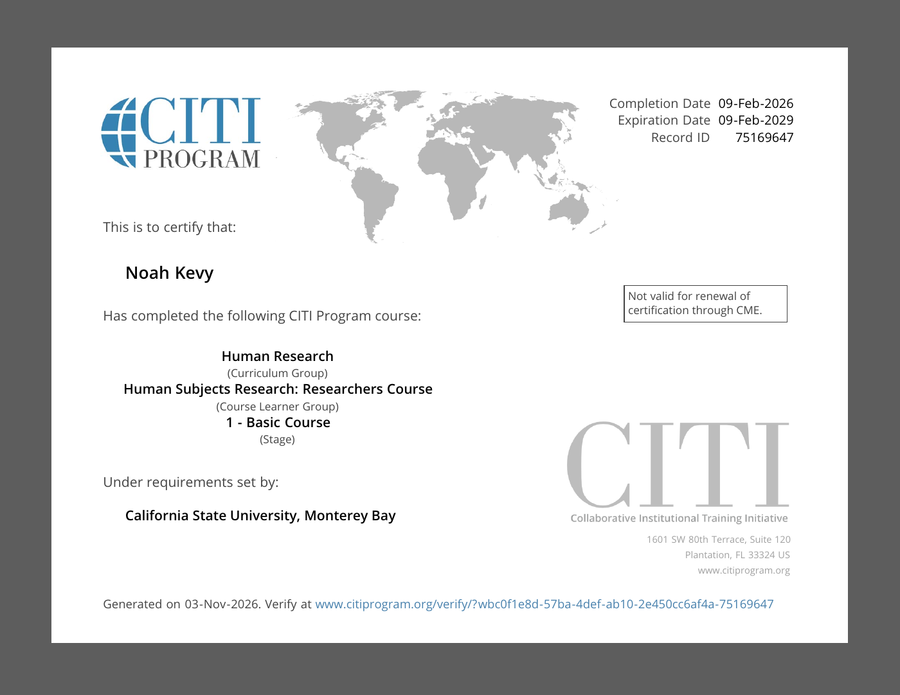
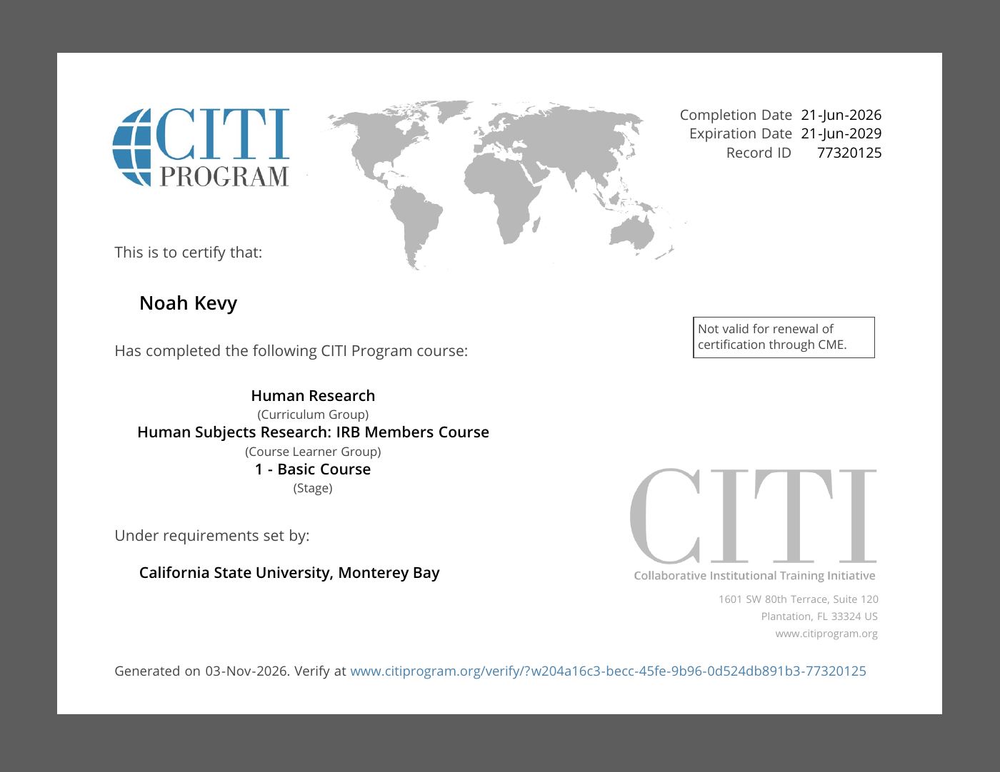

Research with Human Subjects (RHS)
An Institutional Review Board (IRB) serves as a federal or state-authorized group dedicated to reviewing academic research in order to safeguarding the rights and well-being of human subjects. Typically composed of five or more members knowledgeable in areas such as vulnerable populations, the IRB evaluates any academic project intended to produce generalized knowledge, which also involve human subjects. Of course, subject areas vary from clinical trials to behavioral studies, but the ultimate goal is to ensure that ethical standards are upheld and participant safety is prioritized throughout the research process.
Research Certifications

Human Subjects Research: Researchers Course (PDF)
CITI Program · Basic Course
Completed

Human Subjects Research: IRB Members Course (PDF)
CITI Program · Basic Course
Completed